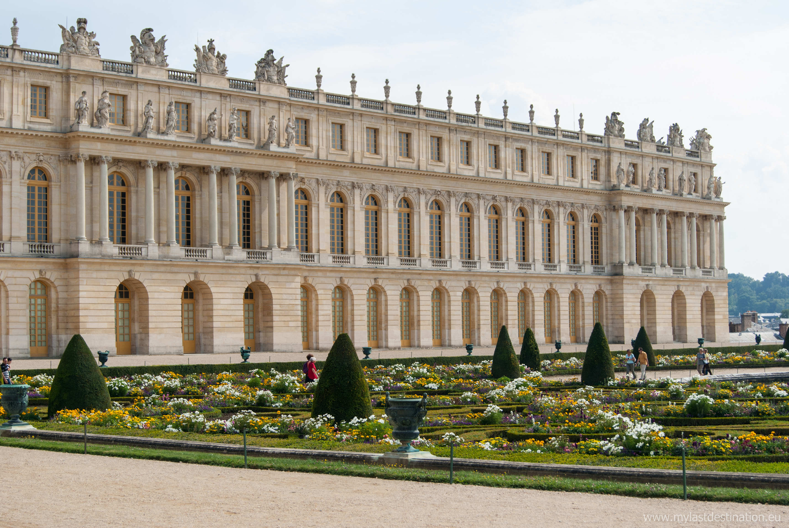
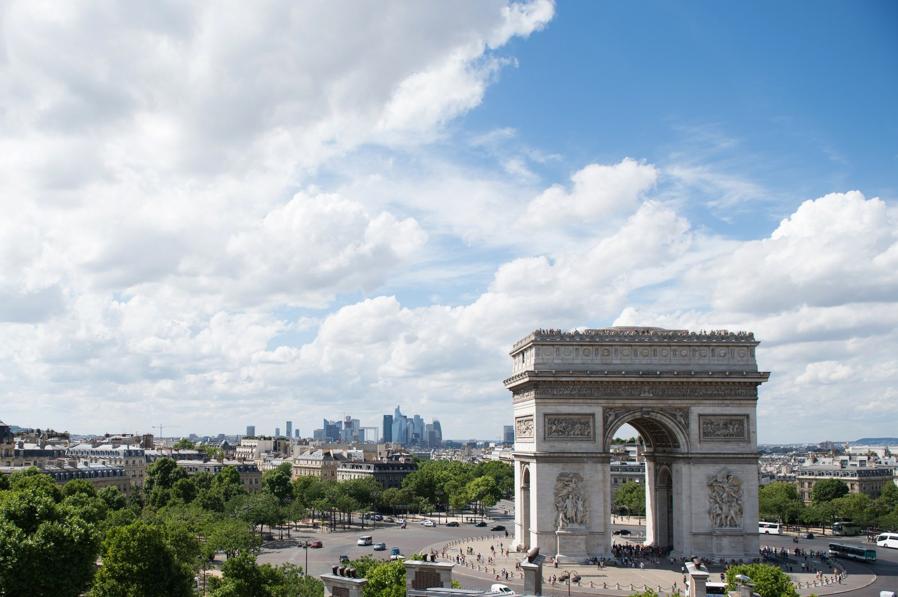

Enjoy the Best of France in 2 Days :)
10 TOP-RATED TOURIST ATTRACTIONS
Louvre Museum

Eiffel Tower

Cathédrale Notre-Dame de Paris

Palace of Versailles
Arc de Triomphe
Sacré-Cœur

Moulin Rouge

Côte d’Azur

Chamonix-Mont-Blanc

Mont Saint-Michel

GENERAL OVERVIEW
Discover Paris through several different tours, taken over the course of two days. Explore the Louvre Museum, take a city tour by private vehicle or electric bicycle, and embark on a Seine River cruise in the City of Light. Then follow in the footsteps of Parisian artists during a private tour of Montmartre, and visit Île de la Cité (Island of the City) for wine and cheese tasting. Priority entrance is included at museums and monuments.
LET’S EXPLORE
On the morning of your first day in Paris, receive a VIP welcome reception at the tour office. Sip tea or coffee while a personal concierge provides a detailed schedule and other relevant information about your 2-day package, which includes five separately guided tours on foot, by bicycle, by car, and by boat, scheduled across two different days. Visit the Louvre, see Paris neighborhoods, explore Montmartre and Île de la Cité, and take a Seine River cruise. At each destination, meet certified guides who inform you about the history of Paris through amusing anecdotes during private tours or small-group tours limited to a maximum of six or 10 people. You’ll have skip-the-line access to monuments and museums visited, and have time to grab meals and find your own transport between activities. Imagine cruising effortlessly through the parks and sidewalks of Paris while receiving a great orientation, informative historical and current-day information, heaps of unique and fascinating stories, great photo opportunities and superb personal service from your guide.
ITINERARY DETAILS
What’s included
- Entrance fees
- All activities
- Wine and cheese tasting
- Driver/ professional guide
- Guaranteed to skip the long lines
- Help hotline
What’s not included
- Hotel pickup and drop-off
- Food and drinks, unless specified
- Gratuities (optional)
Highlights
- Comprehensive tour of the city
- Small-group tour
- Led by a local guide
- Instant Confirmation
- Perfect introduction for first-time visitors
- Multi-Day Trip